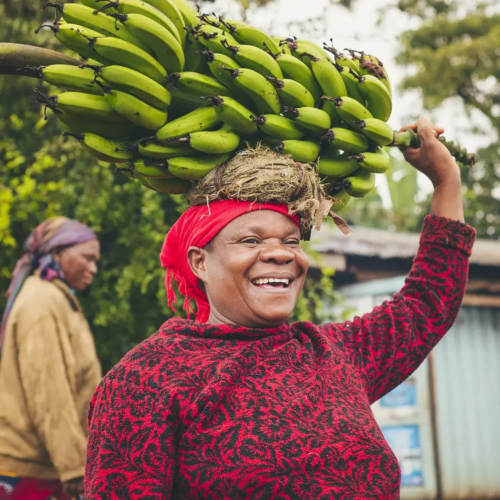
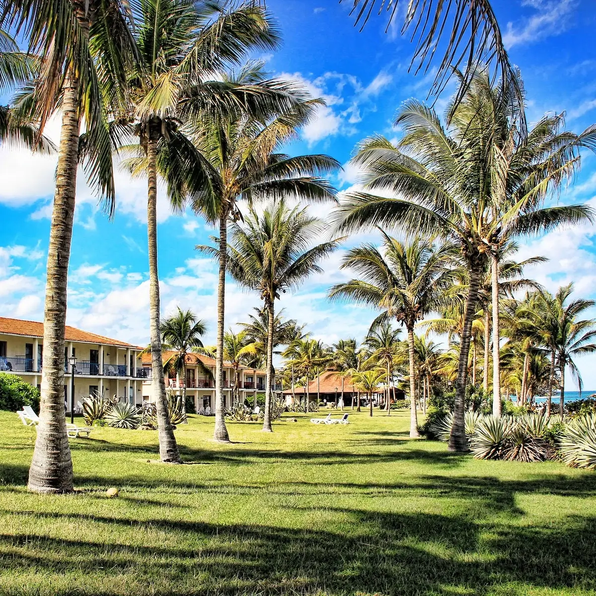
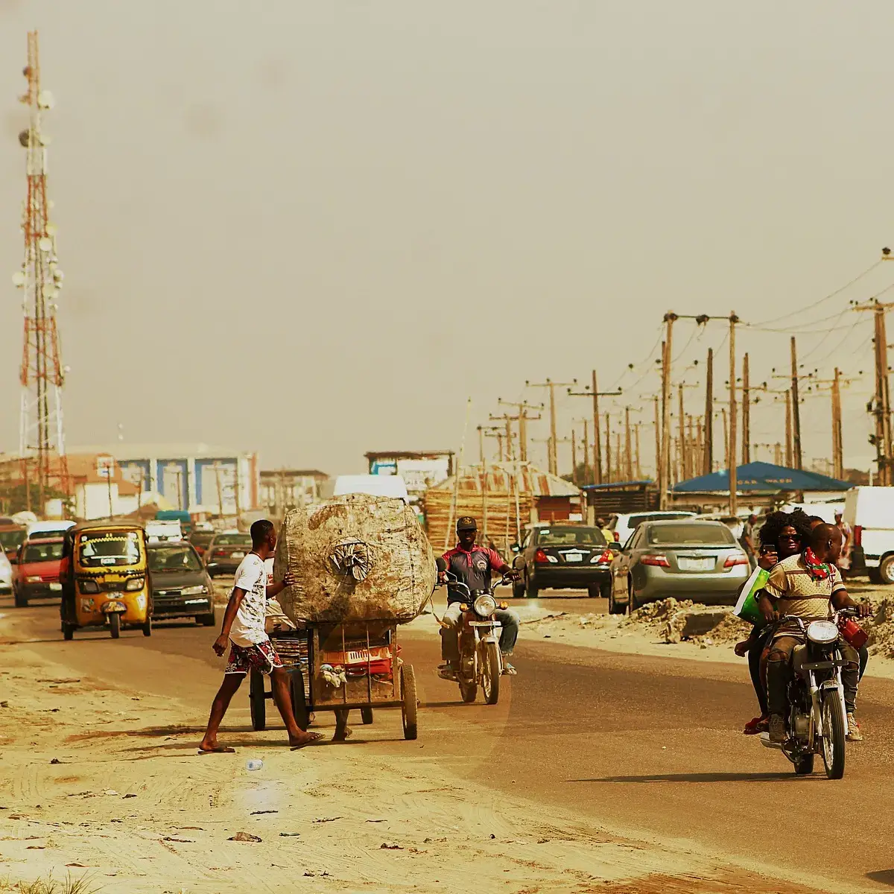
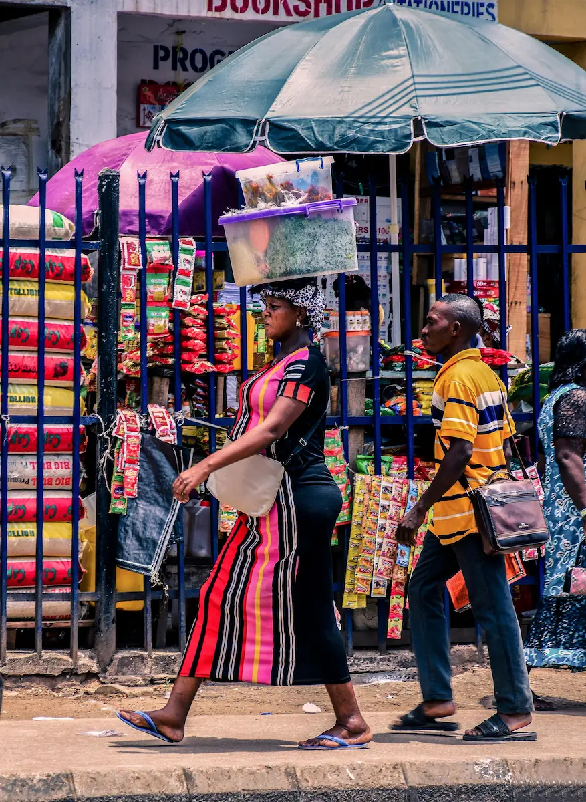
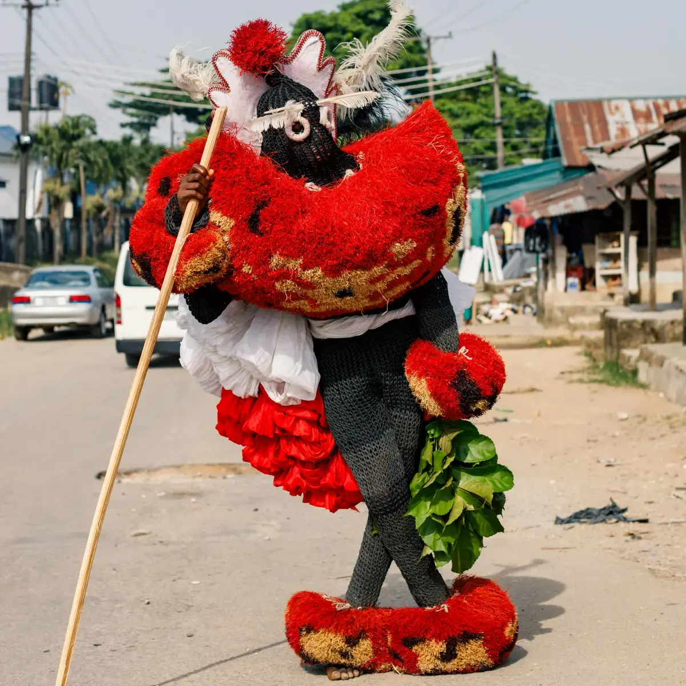

Demographics
Port Harcourt is the capital and largest city of Rivers State in Nigeria. It is the fifth most populous city in Nigeria after Lagos, Kano, Ibadan and Benin. The area that became Port Harcourt in 1912 was before that a farmland of the people of Rebisi (Ikwerre). The colonial administration of Nigeria created the port to export coal from the collieries of Enugu located 243 kilometres (151 mi) north of Port Harcourt, to which it was linked by a railway called the Eastern Line, also built by the British.
Statistical Data
- In 1950, the population of Port Harcourt was 59,752. Port Harcourt has grown by 150,844 since 2015, which represents a 4.99% annual change
- As of 2023, Port Harcourt's urban population is approximately 3,480,000
- From an area of 15.54 km2 (6.00 sq mi) in 1914, Port Harcourt grew uncontrolled to an area of 360 km2 (140 sq mi) in the 1980s.
- After the discovery of crude oil in Oloibiri in 1956, Port Harcourt exported the first shipload from Nigeria in 1958
- The Greater Port Harcourt region, spans eight local government areas that include Port Harcourt, Okrika, Obio-Akpor, Ikwerre, Oyigbo, Ogu–Bolo, Etche and Eleme. Its total population was estimated at 2,000,000 as of 2009, making it one of the largest metropolitan areas in Nigeria.
- Port Harcourt's heaviest precipitation occurs during September with an average of 367 millimetres or 14.45 inches of rain. December on average is the driest month of the year, with an average rainfall of 20 millimetres or 0.79 inches.
Chamber Events
Restaurants' Operators Fair & Exhibion
May 27th, 2024
Breakfast Meetings
Every fourth Saturday of the month
Members' Day
Friday evenings from 6:00pm




